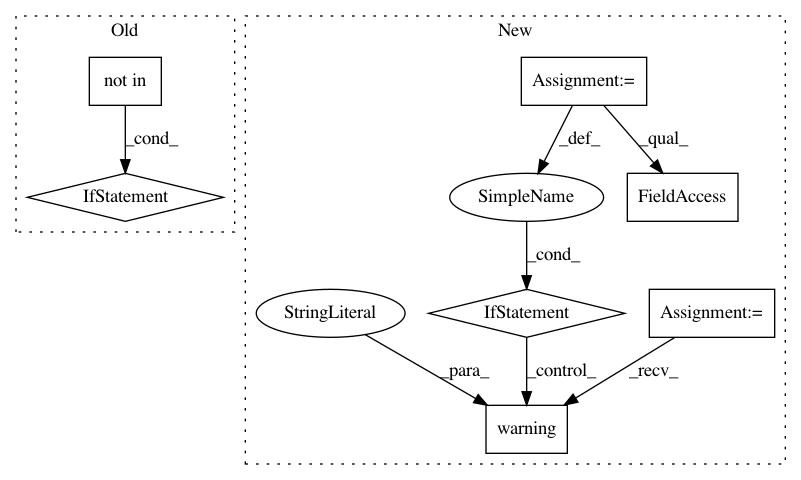

100f6cbd2f03bbd90d7b6a41cc81f711ed466491,petastorm/etl/dataset_metadata.py,,load_row_groups,#Any#,169
Before Change
if ROW_GROUPS_PER_FILE_KEY not in dataset_metadata_dict:
// We also need to check for using absolute paths for backwards compatibility with older generated metadata
use_absolute_paths = True
if ROW_GROUPS_PER_FILE_KEY_ABSOLUTE_PATHS not in dataset_metadata_dict:
raise ValueError("Could not find the row groups per file in the dataset metadata file."
" Metadata file might not be generated properly."
" Make sure to use add_dataset_metadata(..) in"
" petastorm.etl.dataset_metadata.py to"
" properly generate this file in your ETL code."
" You can generate it on an existing dataset using metadata_index_run.py")
if use_absolute_paths:
metadata_dict_key = ROW_GROUPS_PER_FILE_KEY_ABSOLUTE_PATHS
else:
metadata_dict_key = ROW_GROUPS_PER_FILE_KEY
After Change
:return: splitted pieces, one piece per row group
// Split the dataset pieces by row group
metadata = dataset.metadata
if not metadata:
raise ValueError("Could not find _metadata file."
" Use materialize_dataset(..) in petastorm.etl.dataset_metadata.py to generate"
" this file in your ETL code."
" You can generate it on an existing dataset using petastorm.etl.metadata_index_run")
num_row_groups = metadata.num_row_groups
if num_row_groups > 0:
// Use the new metadata file
return _split_row_groups(dataset)
// If we don"t have row groups in the common metadata we look for the old way of loading it
logger.warning("You are using a deprecated metadata version. Please run petastorm.etl.metadata_index_run"
" on spark to update.")
dataset_metadata_dict = dataset.common_metadata.metadata
if ROW_GROUPS_PER_FILE_KEY not in dataset_metadata_dict:
raise ValueError("Could not find row group metadata in _metadata file."
" Use materialize_dataset(..) in petastorm.etl.dataset_metadata.py to generate"
In pattern: SUPERPATTERN
Frequency: 3
Non-data size: 7
Instances
Project Name: uber/petastorm
Commit Name: 100f6cbd2f03bbd90d7b6a41cc81f711ed466491
Time: 2018-08-13
Author: robbieg@uber.com
File Name: petastorm/etl/dataset_metadata.py
Class Name:
Method Name: load_row_groups
Project Name: deepgram/kur
Commit Name: 7f268a42be1c0b6e59635e6b7ac1ff1605605ff1
Time: 2017-04-11
Author: ajsyp@syptech.net
File Name: kur/loss/ctc.py
Class Name: Ctc
Method Name: __init__
Project Name: ray-project/ray
Commit Name: 2cb9cfb2b6b1d2b5a14b543310761d64b76b8508
Time: 2020-04-12
Author: ed.nmi.oakes@gmail.com
File Name: python/ray/serve/http_proxy.py
Class Name: HTTPProxy
Method Name: __call__